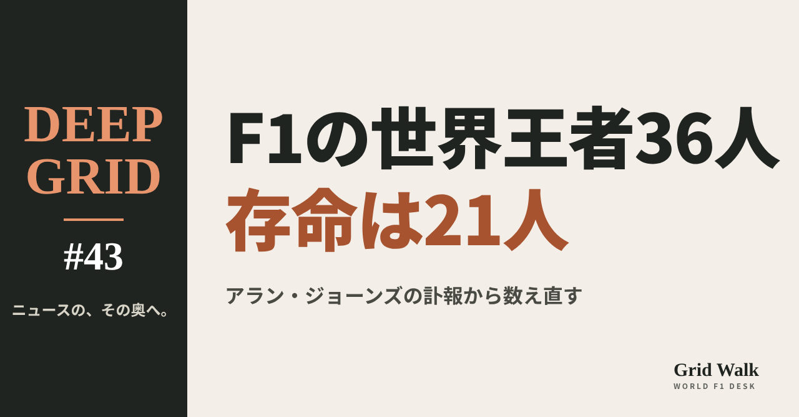
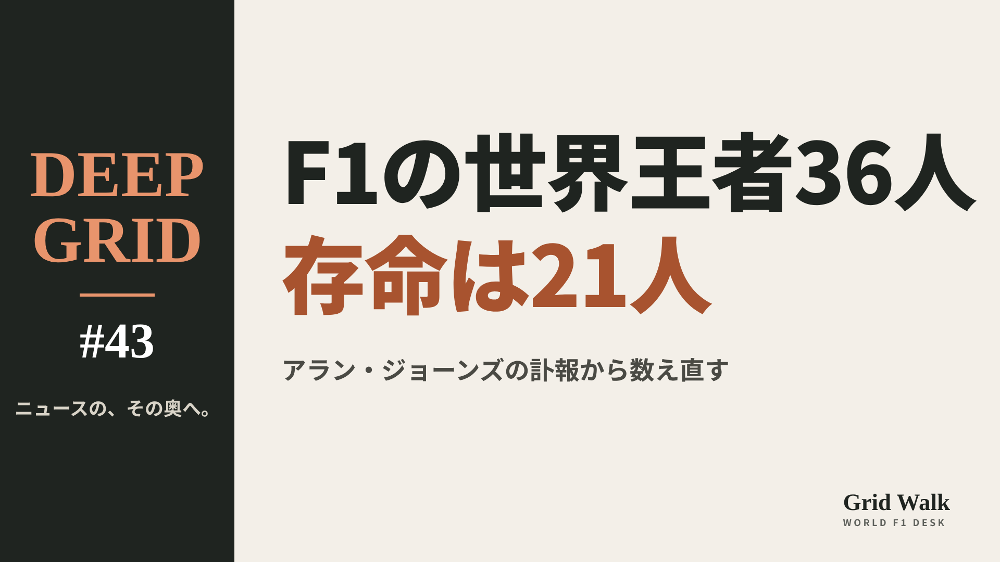

<meta charset="utf-8"><title>DEEP GRID #43 note貼り付け</title>
<style>
/* one column of numbered paste steps; text steps vs image steps differ by marker */
:root{--bg:#F5F4F0;--card:#FFFFFF;--ink:#1D2321;--mute:#5F665F;--line:#DCDAD2;--btn:#1F5FBF;--btnok:#2E8B4F;--img:#E9F3EC;--imgink:#22663B;--sans:'IBM Plex Sans JP','Hiragino Sans','Noto Sans JP',sans-serif}
@media (prefers-color-scheme:dark){:root:not([data-theme="light"]){--bg:#171A19;--card:#202423;--ink:#ECEDE8;--mute:#A3AAA2;--line:#343937;--btn:#4D8BE6;--btnok:#3FA866;--img:#1E2C23;--imgink:#8FD3A6;color-scheme:dark}}
:root[data-theme="dark"]{--bg:#171A19;--card:#202423;--ink:#ECEDE8;--mute:#A3AAA2;--line:#343937;--btn:#4D8BE6;--btnok:#3FA866;--img:#1E2C23;--imgink:#8FD3A6;color-scheme:dark}
body{background:var(--bg);color:var(--ink);font-family:var(--sans);font-size:15px;line-height:1.75;padding:20px 16px 60px}
main{max-width:680px;margin:0 auto;display:grid;gap:28px}
header h1{font-size:22px;margin:0 0 6px;text-wrap:balance}
header p{margin:0;color:var(--mute);font-size:14px}
nav{display:flex;gap:8px;flex-wrap:wrap;margin-top:12px}
nav a{border:1px solid var(--line);border-radius:999px;padding:4px 14px;color:var(--ink);text-decoration:none;font-size:14px;background:var(--card)}
.part h2{font-size:18px;line-height:1.5;margin:0 0 12px;text-wrap:balance;display:flex;gap:10px;align-items:baseline;flex-wrap:wrap}
.tag{font-size:13px;background:var(--ink);color:var(--bg);border-radius:6px;padding:1px 9px}
.steps{list-style:none;margin:0;padding:0;display:grid;gap:12px}
.st{background:var(--card);border:1px solid var(--line);border-radius:12px;padding:12px;min-width:0}
.hd{display:flex;align-items:center;gap:8px;margin-bottom:8px}
.no{width:26px;height:26px;border-radius:50%;background:var(--btn);color:#fff;display:inline-flex;align-items:center;justify-content:center;font-size:13px;font-weight:700;flex:0 0 26px}
.im .no{background:var(--btnok)}
.hd em{font-style:normal;font-size:12px;background:var(--img);color:var(--imgink);border-radius:6px;padding:0 8px}
.bx{font-size:13.5px;line-height:1.7;border:1px solid var(--line);border-radius:8px;padding:8px 10px;max-height:110px;overflow:auto;overflow-wrap:anywhere}
.bx.tall{max-height:150px}.bx p{margin:0 0 6px}.bx h2{font-size:14px;margin:8px 0 4px}.bx a{color:var(--btn)}
.st img{display:block;width:100%;max-width:100%;border:1px solid var(--line);border-radius:8px}
.sub{font-size:12.5px;color:var(--mute);margin:6px 0 0}
.cp{width:100%;margin-top:8px;padding:12px;border:0;border-radius:10px;background:var(--btn);color:#fff;font:600 15px var(--sans);cursor:pointer}
.cp.ok{background:var(--btnok)}.cp.dl{background:var(--btnok)}.cp:focus-visible{outline:3px solid var(--ink);outline-offset:2px}
.xh{font-size:15px;margin:20px 0 10px}
.fb{font-size:13px;line-height:1.7;margin:8px 0 0;padding:8px 10px;border-radius:8px;background:var(--img);color:var(--imgink)}
.opts{display:grid;grid-template-columns:repeat(auto-fill,minmax(240px,1fr));gap:10px}
.opt{min-width:0}.opt img{display:block;width:100%;border:1px solid var(--line);border-radius:8px}
.ol{display:flex;align-items:center;gap:8px;margin-top:6px}.ol b{font-size:13px;flex:0 0 auto}.ol .on{font-size:12.5px;color:var(--mute);flex:1;min-width:0}.ol .cp{width:auto;flex:0 0 auto;padding:9px 14px}.ol .cp{margin:0;padding:9px}
.toast{font-size:13px;color:var(--mute);margin-top:6px}
</style>
<main><header><h1>DEEP GRID #43 note貼り付け</h1><p>1本あります。青い番号は文章、緑は画像です。</p><nav><a href="#p1">#43</a></nav></header><section class="part" id="p1"><h2><span class="tag">DEEP GRID #43</span>生きているF1王者は21人　アラン・ジョーンズの訃報と「22人」の4日間【DEEP GRID #43】</h2><ol class="steps">
<li class="st im"><div class="hd"><span class="no">1</span><b>見出し画像</b><em>画像</em></div><button class="cp dl" data-img="img/world-champions-alive.png" data-name="deep-world-champions-alive_見出し画像.png">ダウンロード</button></li>
<li class="st"><div class="hd"><span class="no">2</span><b>タイトル</b></div><div class="bx" id="p1t">生きているF1王者は21人　アラン・ジョーンズの訃報と「22人」の4日間【DEEP GRID #43】</div><button class="cp" data-plain="p1t">タイトルをコピー</button></li>
<li class="st"><div class="hd"><span class="no">3</span><b>本文</b></div><div class="bx tall" id="p1r"><p>11月5日、1980年の王者アラン・ジョーンズが80歳で亡くなった。その4日前には、20歳のアンドレア・キミ・アントネッリが王座を決めたばかりだった。F1の世界王者は、これまで何人いて、いま何人が生きているのか。F1公式サイトの殿堂の一覧と、一人ひとりの訃報や近況の報道から数え直した。編集部が数えた範囲では、この4日間、生きている王者は22人いて、これまでで最も多かった。</p><p>データの表と、出典42件はサイトで → <a href="https://f1gridwalk.github.io/deep/world-champions-alive/?utm_source=note&amp;utm_campaign=world-champions-alive">https://f1gridwalk.github.io/deep/world-champions-alive/?utm_source=note&amp;utm_campaign=world-champions-alive</a></p><h2>先に結論</h2><p>① この号で数えるのは、ドライバーズ選手権のワールドチャンピオンになった「人」の数だ。F1公式サイトの殿堂には、1950年のファリーナから2025年のランド・ノリスまで35人が並ぶ。11月1日に王座を決めたアントネッリを足して、36人になる。王座の数は77ある。</p><p>② 11月5日、1980年の王者アラン・ジョーンズが、短い闘病の末に80歳で亡くなった（英The Race）。ウィリアムズにとって初めてのドライバーズ王者で、オーストラリア人ではジャック・ブラバムに次ぐ2人目の王者だった。</p><p>③ 36人のうち、亡くなったのは15人、生きているのは21人（2026年11月5日時点。編集部が訃報と近況の報道で一人ずつ確かめた数）。いちばん年長はジャッキー・スチュワートの87歳、次がマリオ・アンドレッティの86歳だ。</p><p>④ アントネッリが王者になった11月1日から、ジョーンズが亡くなった11月5日までの4日間、生きている王者は22人いた。編集部が王座の年と亡くなった日から数えた範囲では、これがこれまでで最も多い。それまでは21人が最多だった（存命とした人がすべて生きていることが前提）。</p><p>⑤ 36人の国は15か国。最も多いのはイギリスの11人で、生きている王者でもイギリスが6人と最も多い。ジョーンズが亡くなり、オーストラリアの王者は2人ともいなくなった。アルゼンチン、オーストリア、ニュージーランドも、生きている王者はいない。</p><p><strong>あなたにとって、いちばん心に残っているF1の世界王者は誰ですか？</strong></p><h2>続きは F1 Grid Walk で</h2><p>ここから先の「「36人」は、どう数えたのか」「アラン・ジョーンズ、80歳」「亡くなった15人」「生きている21人と、「22人」の4日間」は、サイトで読めます。36人の王者と、いま、生きている王者の数の移り変わり、国ごとの王者の数の表も載せています。</p><p><strong>DEEP GRID #43「生きているF1王者は21人　アラン・ジョーンズの訃報と「22人」の4日間」</strong></p><p><a href="https://f1gridwalk.github.io/deep/world-champions-alive/">https://f1gridwalk.github.io/deep/world-champions-alive/</a></p><p>━━━━━━━━━━</p><p><strong>F1 Grid Walk では、世界のF1ニュースを毎日日本語でまとめています。</strong></p><p>海外の記事の要約を、毎日載せています。</p><p>ほかの海外記事も読みたい方は、F1 Grid Walkへ。</p><p><a href="https://f1gridwalk.github.io/">https://f1gridwalk.github.io/</a></p><p>━━━━━━━━━━</p><p><a href="https://www.the-race.com/formula-1/1980-f1-champion-alan-jones-passes-away/">出典：The Race</a></p><p><a href="https://www.skysports.com/f1/news/13608235/former-formula-1-world-champion-alan-jones-dies-aged-80">出典：Sky Sports</a></p><p><a href="https://www.crash.net/f1/news/1109325/1/first-williams-f1-world-champion-alan-jones-dies-aged-80">出典：Crash.net</a></p><p><a href="https://www.formula1.com/en/drivers/hall-of-fame">出典：F1公式サイト</a></p><p><a href="https://www.formula1.com/en/drivers/hall-of-fame/Alan_Jones.html">出典：F1公式サイト</a></p><p><a href="https://www.formula1.com/en/drivers/hall-of-fame/Nino_Farina.html">出典：F1公式サイト</a></p><p><a href="https://www.formula1.com/en/drivers/hall-of-fame/Juan_Manuel_Fangio.html">出典：F1公式サイト</a></p><p><a href="https://www.formula1.com/en/drivers/hall-of-fame/Alberto_Ascari.html">出典：F1公式サイト</a></p><p><a href="https://www.formula1.com/en/drivers/hall-of-fame/Mike_Hawthorn.html">出典：F1公式サイト</a></p><p><a href="https://www.formula1.com/en/drivers/hall-of-fame/Graham_Hill.html">出典：F1公式サイト</a></p><p><a href="https://www.formula1.com/en/drivers/hall-of-fame/Denny_Hulme.html">出典：F1公式サイト</a></p><p><a href="https://www.formula1.com/en/championship/drivers/hall-of-fame/Jochen_Rindt.html">出典：F1公式サイト</a></p><p><a href="https://www.formula1.com/en/drivers/hall-of-fame/James_Hunt.html">出典：F1公式サイト</a></p><p><a href="https://www.formula1.com/en/latest/article/john-surtees-1934-2017.5gBbJEXLG0yOM2eUimKISW">出典：F1公式サイト</a></p><p><a href="https://www.formula1.com/en/latest/article/who-was-ayrton-senna-and-whyis-he-regarded-as-one-of-f1s-greatest-drivers.2GZEdmgHd9mPeCae2n6n4K">出典：F1公式サイト</a></p><p><a href="https://www.fia.com/news/sir-jack-brabham-1926-2014">出典：FIA</a></p><p><a href="https://www.fia.com/news/50th-anniversary-tragic-death-jim-clark">出典：FIA</a></p><p><a href="https://grandprix.com/news/phil-hill-1927-2008.html">出典：GrandPrix.com</a></p><p><a href="https://www.itv.com/news/2019-05-21/austrian-f1-champion-niki-lauda-dies-aged-70">出典：ITV</a></p><p><a href="https://acritica.net/esportes/automobilismo/antonelli-faz-historia-na-formula-1-confira-todos-os-campeoes-mundiais-desde-1950/">出典：A Crítica（ブラジル）</a></p><p><a href="https://www.planetf1.com/news/f1-results-mexico-city-grand-prix-2026-race">出典：PlanetF1</a></p><p><a href="https://www.aljazeera.com/sports/2026/11/2/kimi-antonelli-becomes-formula-ones-youngest-world-champion-in-mexico-city">出典：アルジャジーラ</a></p><p><a href="https://www.autosport.com/f1/news/who-are-the-oldest-formula-1-drivers-world-champions-and-race-winners/10562413/">出典：Autosport</a></p><p><a href="https://www.formulaonehistory.com/on-this-day-f1-june-11">出典：formulaonehistory.com</a></p><p><a href="https://www.formulaonehistory.com/on-this-day-f1-february-28">出典：formulaonehistory.com</a></p><p><a href="https://www.pitdebrief.com/?p=140177">出典：Pit Debrief</a></p><p><a href="https://www.formula1.com/en/latest/article/beyond-the-grid-legends-emerson-fittipaldi-on-when-he-shocked-formula-1.4MrTeObwAJXaLJ1MR8FQTa/">出典：F1公式サイト</a></p><p><a href="https://www.ilfoglio.it/en/sport/2026/11/02/news/kimi-antonelli-someone-like-him-comes-along-once-every-twenty-years-says-former-world-champion-andretti--412376">出典：Il Foglio（イタリア）</a></p><p><a href="https://racingnews365.com/f1-champion-loses-1-4-million-pound-court-battle">出典：RacingNews365</a></p><p><a href="https://www.correio24horas.com.br/eleicoes/nelson-piquet-faz-nova-investida-politica-e-doa-r-100-mil-para-candidato-que-pede-reforma-no-stf-1026">出典：Correio（ブラジル）</a></p><p><a href="https://www.grandprix.com/news/keke-rosberg-75-admits-his-health-is-failing.html">出典：GrandPrix.com</a></p><p><a href="https://www.grandprix247.com/f1-opinion/alain-prost-on-kimi-antonelli-the-question-everyone-is-asking-now-is-how-long-will-he-hold-on">出典：GRANDPRIX247</a></p><p><a href="https://www.motorsportweek.com/2026/04/28/nigel-mansell-dubs-f1-totally-false-in-regulations-view/">出典：Motorsport Week</a></p><p><a href="https://www.gpblog.com/en/news/keep-fighting-michael-formula-1-paddock-wishes-schumacher-a-happy-birthday">出典：GPblog</a></p><p><a href="https://shows.acast.com/stay-on-track-with-damon-hill-and-johnny-herbert/episodes">出典：Acast</a></p><p><a href="https://www.crash.net/f1/news/1096245/1/jacques-villeneuve-warns-kimi-antonelli-against-believing-his-own-hype-f1-title">出典：Crash.net</a></p><p><a href="https://www.skysports.com/f1/news/12433/13579867/f1-fans-will-crucify-teams-if-team-orders-are-used-in-2026-title-battle-says-former-world-champion-mika-hakkinen">出典：Sky Sports</a></p><p><a href="https://www.grandprix.com/news/raikkonen-finally-speaks-about-the-other-kimi.html">出典：GrandPrix.com</a></p><p><a href="https://racer.com/2026/11/02/former-f1-champions-praise-antonelli-he-s-made-everyone-else-look-silly-">出典：RACER</a></p><p><a href="https://f1i.com/news/564595-button-sees-one-fix-for-antonelli-to-become-unstoppable.html/amp">出典：F1i</a></p><p><a href="https://www.crash.net/f1/news/1109279/1/sebastian-vettels-heartfelt-message-kimi-antonelli-after-f1-record-shattered">出典：Crash.net</a></p><p><a href="https://www.planetf1.com/news/kimi-antonelli-michael-schumacher-comparison-nico-rosberg">出典：PlanetF1</a></p></div><button class="cp" data-rich="p1r">本文をコピー</button></li>
<li class="st"><div class="hd"><span class="no">4</span><b>ハッシュタグ</b></div><div class="bx" id="p1h">#F1 #F1jp #アラン・ジョーンズ #アントネッリ #F1の歴史 #世界王者 #DEEPGRID</div><button class="cp" data-plain="p1h">タグをコピー</button></li>
</ol><h3 class="xh">X</h3><ol class="steps">
<li class="st im"><div class="hd"><b>X用の画像</b><em>画像</em></div><button class="cp dl" data-img="img/x_world-champions-alive.png" data-name="x_deep-world-champions-alive.png">ダウンロード</button></li>
<li class="st"><div class="hd"><b>① noteをシェアするときの文</b></div><div class="bx" id="p1x0">F1の世界王者は36人。11月5日に1980年の王者アラン・ジョーンズが亡くなり、生きている王者は21人になりました。一人ずつ数え直しました。DEEP GRID #43 #F1jp</div><button class="cp" data-plain="p1x0">コピー</button></li>
<li class="st"><div class="hd"><b>② ①への返信</b></div><div class="bx" id="p1x1">ほかの海外記事も読みたい方は、F1 Grid Walkへ。
https://f1gridwalk.github.io/deep/world-champions-alive/?utm_source=x&amp;utm_campaign=world-champions-alive</div><button class="cp" data-plain="p1x1">コピー</button></li>
<li class="st"><div class="hd"><b>③ ②への返信</b></div><div class="bx" id="p1x2">毎日の海外F1ニュースは、日本語でこちらにまとめています。
https://f1gridwalk.github.io/</div><button class="cp" data-plain="p1x2">コピー</button></li>
</ol></section></main><script>
function done(b,msg){const t=b.dataset.t||b.textContent;b.dataset.t=t;b.classList.add('ok');b.textContent=msg||'コピーしました';setTimeout(()=>{b.classList.remove('ok');b.textContent=t},2000)}
function selectEl(el){const r=document.createRange();r.selectNodeContents(el);const s=getSelection();s.removeAllRanges();s.addRange(r)}
async function rich(el,b){
  try{await navigator.clipboard.write([new ClipboardItem({'text/html':new Blob([el.innerHTML],{type:'text/html'}),'text/plain':new Blob([el.innerText],{type:'text/plain'})})]);done(b);return}catch(e){}
  selectEl(el);let ok=false;try{ok=document.execCommand('copy')}catch(e){}
  if(ok){getSelection().removeAllRanges();done(b)}else{done(b,'選択しました。コピーしてください')}}
async function plain(el,b){
  try{await navigator.clipboard.writeText(el.innerText);done(b);return}catch(e){}
  selectEl(el);let ok=false;try{ok=document.execCommand('copy')}catch(e){}
  if(ok){getSelection().removeAllRanges();done(b)}else{done(b,'選択しました。コピーしてください')}}
let dlns=null;(async()=>{try{dlns=await window.claude?.use?.("downloads")}catch(e){dlns=null}})();
async function img(src,b){
  b.dataset.t=b.dataset.t||b.textContent;
  if(!dlns){try{dlns=await window.claude?.use?.("downloads")}catch(e){}}
  if(!dlns){b.textContent='ダウンロードできませんでした';setTimeout(()=>{b.textContent=b.dataset.t},3500);return}
  try{const blob=await fetch(src).then(r=>r.blob());b.textContent='保存の確認を開いています…';
    await dlns.save({filename:b.dataset.name,data:blob});done(b,'ダウンロードしました')}
  catch(e){const c=e&&e.code;b.textContent=c==='declined'?'キャンセルしました':c==='rate_limited'?'少し待ってからもう一度押してください':'ダウンロードできませんでした';setTimeout(()=>{b.textContent=b.dataset.t},3500)}}
document.querySelectorAll('.cp').forEach(b=>b.addEventListener('click',()=>{
  if(b.dataset.rich)rich(document.getElementById(b.dataset.rich),b);
  else if(b.dataset.plain)plain(document.getElementById(b.dataset.plain),b);
  else img(b.dataset.img,b)}));
</script>